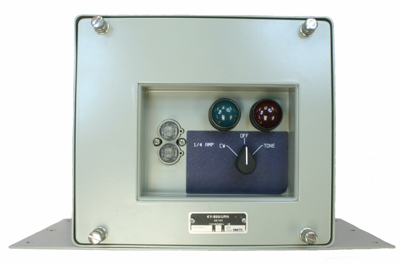
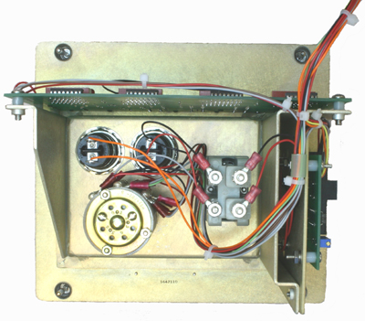

The KY-850/URN Solid-State Keyer is used to apply a selectable identifying code to radio transmissions used in
navigational aids. It replaces the KY-122A/URN mechanical keyer.
The keyer keys a transmitter by encoding the transmission with a series of Morse Code call letters. A switch on the
front panel selects a CW or Tone position. In The CW position, the keyer encodes the transmitter by providing On-Off
contact closures on a remote line. This position is used with transmitters that provide their own tone, such as TACAN.
For transmitters that do no generate their own tone, such as VORTAC or UHF homers, the Tone position is used.
The keyer consists of an oscillator circuit board, a keyer circuit board and a power supply attached to a mounting bracket.
The mounting bracket is welded to the back of the faceplate which serves as the front of the Keyer.

Specifications:
Weight: 6 lbs
Dimensions: 13.5"W (bottom plate) x 8"H x 6"L
ISO9001:2008 (Quality Management System)
No periodic cleaning or maitenance required
Solid state
Interior view of KY-850/URN
Equipment, accessories, & documents:
Solid-state keyer, KY-850/URN
Technical manual, KY-850/URN
SCAT 4308 Oscilloscope (required but not supplied)